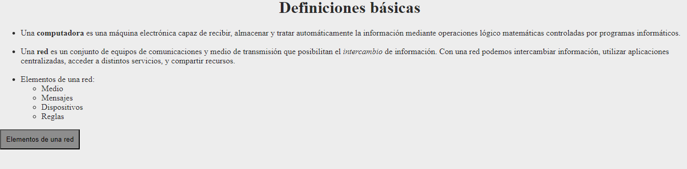
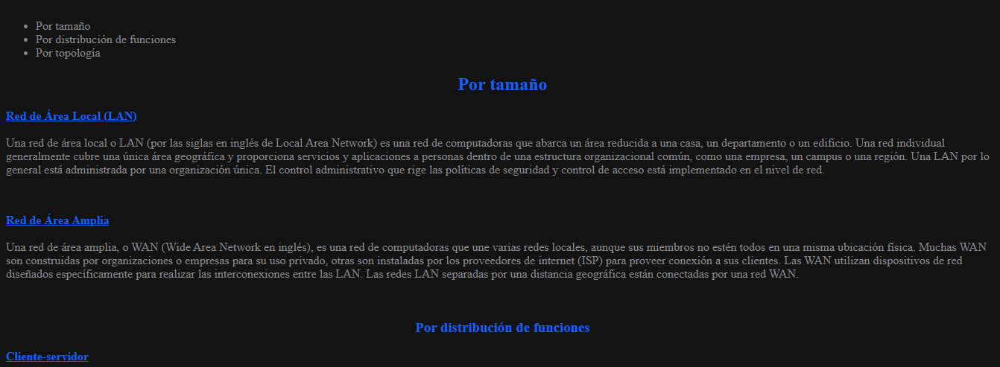
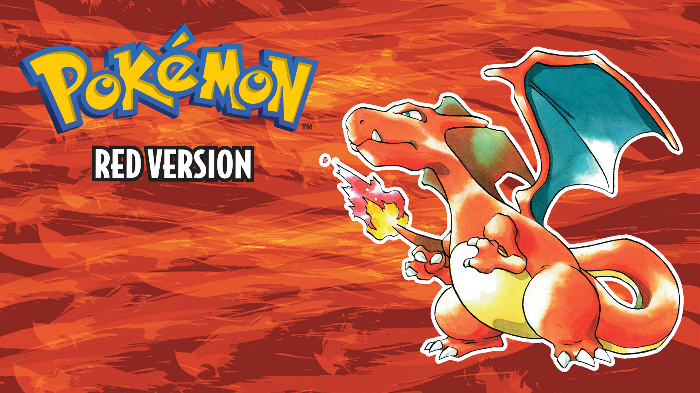

Hola! Yo soy Tobías Miranda, y soy un desarrollador web que recien está comenzando en el mundo del html. Hasta ahora, estos son mis 4 proyectos:



Todo esto lo aprendí en el taller de Redes y Desarrollo Web, junto con el profesor Alejandro Herms. Yo nunca antes había utiizado HTML, pero la verdad se me hizo bastante entretenido y útil como lenguaje de desarrollo web. Seguramente haya mejores lenguajes, pero este me gustó bastante.